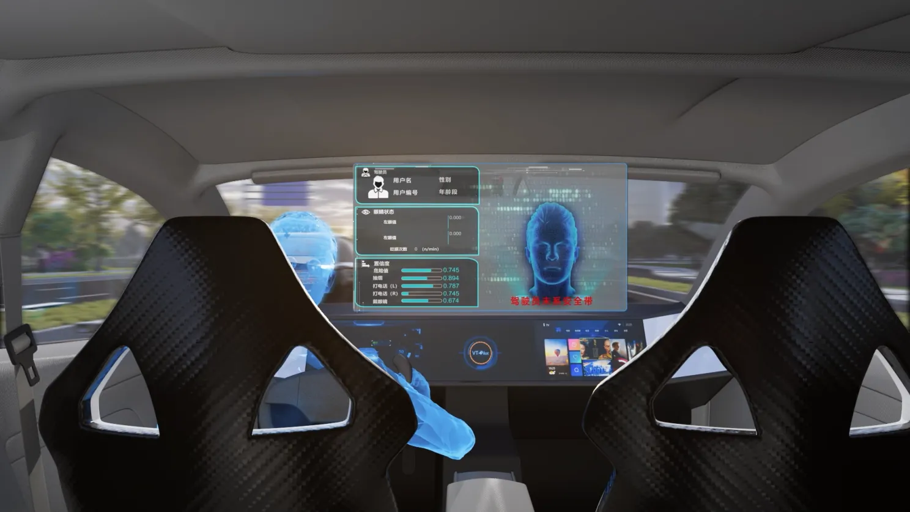
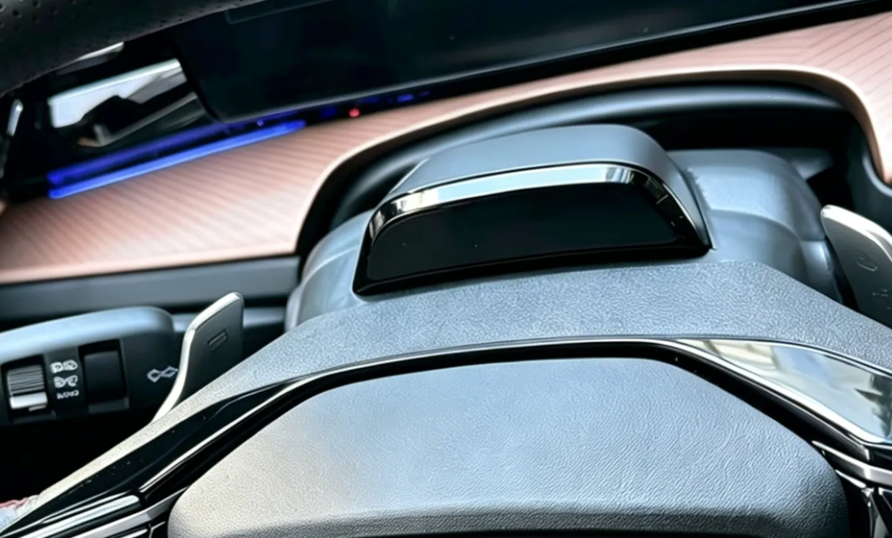
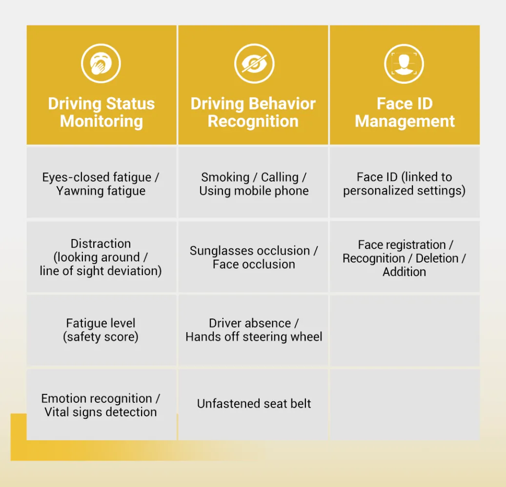
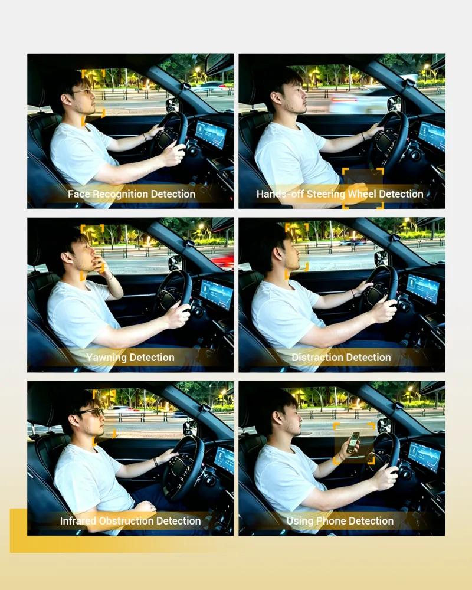

On June 1, 2026, the Motor Vehicle Driver Fatigue Driving Identification Rules (GA/T 2372-2026) issued by the Ministry of Public Security will be implemented across China. With more detailed criteria for identifying driver fatigue, the new rules signal industry compliance upgrades and the growing trend of graded monitoring systems. Driver status monitoring has entered a refined era, making real-time status reminders increasingly important. Systems equipped with graded fatigue reminder functions will become a preferred solution in the market.
In European and other overseas markets, DMS has long been a key requirement for new vehicle access.
VT-DMS aligns with the new regulatory trend and has made a forwardu2011looking layout in line with EU ADDW/DDAW functional guidelines. It enables multi-dimensional driver status recognition, fatigue level classification, and timely reminders, providing professional support for driving status monitoring.

VT-DMS: Provides Graded Reminders for Driving Status
VT-DMS detects drivers' facial conditions, line of sight, body movements and other behaviors in real time. Combined with driving time and steering operation status, it assesses and classifies driver alertness, and provides visual and audio reminders through the humanu2011machine interface when needed.

Aligns with Global Regulatory Trends
Previously, models of wellu2011known international brands equipped with VT-DMS have been tested and verified in Spain in accordance with the implementing rules of EU (EU) 2023/2590 and relevant standards of (EU) 2019/2144 (GSR 2.0). VT-DMS supports features including Advanced Driver Distraction Warning (ADDW), Driver Drowsiness and Attention Warning (DDAW), and cybersecurity functions.
Beyond Fatigue Grading: Full Coverage of Driving Behavior Monitoring

*Specific functions and parameters can be customized based on customer requirements.
More Than Hardware: An Integrated Software & Hardware Solution
Camera Module: 2MP | 30fps | IR 940nm night vision enhancement
Detection Accuracy: Precisely recognizes eye closure frequency, yawning frequency, and head posture
Environmental Adaptability: Operating temperature u201140℃ ~ +85℃ | Protection grade IP52
Personalized Functions: Face ID personalized login | IR recognition for sunglasses | Smoking / Calling / Driver absence detection

With the implementation of new rules and continuous improvement of global automotive regulations, driver status monitoring has become an inevitable trend in vehicle configuration. With mature software and hardware capabilities, VT-DMS provides graded status evaluation and timely reminders for drivers. Voyager Tech will continue to optimize intelligent mobility technologies and products, help automakers respond to regulatory trends, and contribute to the development of the global automotive industry.
*Statement: VT-DMS is only an auxiliary reminder system and shall not replace the driver's subjective judgment and active safe driving behavior.